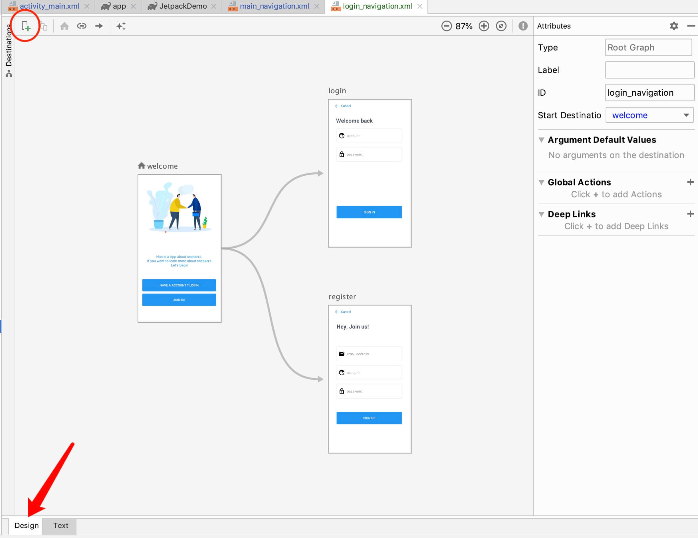

简介 定义 Navigation 是什么呢？谷歌的介绍视频上说：
Navigation 是一个可简化Android导航的库和插件
更确切的来说，Navigation 是用来管理 Fragment 的切换，并且可以通过可视化的方式，看见 App 的交互流程。这完美的契合了 Jake Wharton 大神单 Activity 的建议。
优点
处理 Fragment 的切换（上文已说过）
默认情况下正确处理 Fragment 的前进和后退
为过渡和动画提供标准化的资源
实现和处理深层连接
可以绑定 Toolbar、BottomNavigationView 和 ActionBar 等
SafeArgs（Gradle 插件） 数据传递时提供类型安全性
ViewModel 支持
准备 如果想要进行下面的学习，你需要 Android studio 3.2 或者更高的 Android studio 版本。
学习方式 最好的学习方式仍然是通过官方文档，下面是官方的学习地址：Navigation Codelab Navigation Demo 地址
实战 在实战之前，我们先来了解一下 Navigation 中最关键的三要素，他们是：
名词
解释
Navigation Graph(New XML resource)
如我们的第一张图所示，这是一个新的资源文件，用户在可视化界面可以看出他能够到达的 Destination(用户能够到达的屏幕界面)，以及流程关系。
NavHostFragment(Layout XML view)
当前 Fragment 的容器
NavController(Kotlin/Java object)
导航的控制者
可能我这么解释还是有点抽象，做一个不是那么恰当的比喻，我们可以将 Navigation Graph 看作一个地图，NavHostFragment 看作一个车，以及把 NavController 看作车中的方向盘，Navigation Graph 中可以看出各个地点（Destination）和通往各个地点的路径，NavHostFragment 可以到达地图中的各个目的地，但是决定到什么目的地还是方向盘 NavController，虽然它取决于开车人（用户）。
第一步 添加依赖 模块层的 build.gradle 文件需要添加：
1 2 3 4 5 6 ext.navigationVersion = "2.0.0" dependencies { //... implementation "androidx.navigation:navigation-fragment-ktx:$rootProject.navigationVersion" implementation "androidx.navigation:navigation-ui-ktx:$rootProject.navigationVersion" }
如果你要使用 SafeArgs 插件，还要在项目目录下的 build.gradle 文件添加：
1 2 3 4 5 6 buildscript { ext.navigationVersion = "2.0.0" dependencies { classpath "androidx.navigation:navigation-safe-args-gradle-plugin:$navigationVersion" } }
以及模块下面的 build.gradle 文件添加：
1 2 apply plugin: 'kotlin-android-extensions' apply plugin: 'androidx.navigation.safeargs'
第二步 创建 navigation 导航
创建基础目录：资源文件res目录下创建navigation目录 -> 右击navigation目录New一个Navigation resource file
创建一个Destination，如果说navigation是我们的导航工具，Destination是我们的目的地，在此之前，我已经写好了一个WelcomeFragment、LoginFragment和RegisterFragment，添加Destination的操作完成后如下所示：

除了可视化界面之外，我们仍然有必要看一下里面的内容组成，login_navigation.xml :
1 2 3 4 5 6 7 8 9 10 11 12 13 14 15 16 17 18 19 20 21 22 23 24 25 26 27 28 29 30 31 32 33 34 <navigation ... android:id="@+id/login_navigation" app:startDestination="@id/welcome"> <fragment android:id="@+id/login" android:name="com.joe.jetpackdemo.ui.fragment.login.LoginFragment" android:label="LoginFragment" tools:layout="@layout/fragment_login" /> <fragment android:id="@+id/welcome" android:name="com.joe.jetpackdemo.ui.fragment.login.WelcomeFragment" android:label="LoginFragment" tools:layout="@layout/fragment_welcome"> <action .../> <action .../> </fragment> <fragment android:id="@+id/register" android:name="com.joe.jetpackdemo.ui.fragment.login.RegisterFragment" android:label="LoginFragment" tools:layout="@layout/fragment_register" > <argument .../> </fragment> </navigation>
我在这里省略了一些不必要的代码。让我们看一下 navigation 标签的属性：
属性
解释
app:startDestination
默认的起始位置
第三步 建立 NavHostFragment 我们创建一个新的 LoginActivity ，在 activity_login.xml 文件中：
1 2 3 4 5 6 7 8 9 10 11 12 <androidx.constraintlayout.widget.ConstraintLayout ...> <fragment android:id="@+id/my_nav_host_fragment" android:name="androidx.navigation.fragment.NavHostFragment" app:navGraph="@navigation/login_navigation" app:defaultNavHost="true" android:layout_width="match_parent" android:layout_height="match_parent"/> </androidx.constraintlayout.widget.ConstraintLayout>
有几个属性需要解释一下：
属性
解释
android:name
值必须是 androidx.navigation.fragment.NavHostFragment，声明这是一个 NavHostFragment
app:navGraph
存放的是第二步建好导航的资源文件，也就是确定了 Navigation Graph
app:defaultNavHost=”true”
与系统的返回按钮相关联
第四步 界面跳转、参数传递和动画 在 WelcomeFragment 中，点击登录和注册按钮可以分别跳转到 LoginFragment 和 RegisterFragment 中。
这里我使用了两种方式实现：方式一 利用 ID 导航
1 2 3 4 5 6 7 8 9 10 11 12 13 14 15 btnLogin.setOnClickListener { // 设置动画参数 val navOption = navOptions { anim { enter = R.anim.slide_in_right exit = R.anim.slide_out_left popEnter = R.anim.slide_in_left popExit = R.anim.slide_out_right } } // 参数设置 val bundle = Bundle() bundle.putString("name","TeaOf") findNavController().navigate(R.id.login, bundle,navOption) }
后续 LoginFragment 的接收代码比较简单，直接获取 Fragment 中的 Bundle 即可，这里不再出示代码。最后的效果：
方式二 利用 Safe Args login_navigation.xml ：
1 2 3 4 5 6 7 8 9 10 11 12 13 14 15 16 17 18 19 20 21 22 23 24 25 26 27 28 29 30 31 32 33 <navigation ...> <fragment ... /> <fragment android:id="@+id/welcome" > <action android:id="@+id/action_welcome_to_login" app:destination="@id/login"/> <action android:id="@+id/action_welcome_to_register" app:enterAnim="@anim/slide_in_right" app:exitAnim="@anim/slide_out_left" app:popEnterAnim="@anim/slide_in_left" app:popExitAnim="@anim/slide_out_right" app:destination="@id/register"/> </fragment> <fragment android:id="@+id/register" ... > <argument android:name="EMAIL" android:defaultValue="2005@qq.com" app:argType="string"/> </fragment> </navigation>
细心的同学可能已经观察到 navigation 目录下的 login_navigation.xml 资源文件中的 action 标签 和 argument 标签，这里需要解释一下：action 标签
属性
作用
app:destination
跳转完成到达的 fragment 的 id
app:popUpTo
将fragment从栈中弹出，直到某个 id 的 fragment
argument 标签
属性
作用
android:name
标签名字
app:argType
标签的类型
android:defaultValue
默认值
点击 Android studio 中的 Make Project 按钮，可以发现系统为我们生成了两个类：
WelcomeFragment 中的 JOIN US 按钮点击事件：
1 2 3 4 5 btnRegister.setOnClickListener { val action = WelcomeFragmentDirections .actionWelcomeToRegister() .setEMAIL("TeaOf1995@Gamil.com") findNavController().navigate(action)
RegisterFragment 中的接收：
1 2 3 4 5 6 7 override fun onViewCreated(view: View, savedInstanceState: Bundle?) { super.onViewCreated(view, savedInstanceState) // ... val safeArgs:RegisterFragmentArgs by navArgs() val email = safeArgs.email mEmailEt.setText(email)
以及效果：
需要提及的是，如果不用 Safe Args，action 可以由 Navigation.createNavigateOnClickListener(R.id.next_action, null) 方式生成，感兴趣的同学可以自行编写。
更多 Navigation 可以绑定 menus、drawers 和 bottom navigation，这里我们以 bottom navigation 为例，我先在 navigation 目录下新创建了 main_navigation.xml ，接着新建了 MainActivity，下面则是 activity_main.xml :
1 2 3 4 5 6 7 8 9 10 11 12 13 14 15 16 17 18 19 20 21 22 <LinearLayout ...> <fragment android:id="@+id/my_nav_host_fragment" android:name="androidx.navigation.fragment.NavHostFragment" android:layout_width="match_parent" app:navGraph="@navigation/main_navigation" app:defaultNavHost="true" android:layout_height="0dp" android:layout_weight="1"/> <com.google.android.material.bottomnavigation.BottomNavigationView android:id="@+id/navigation_view" android:layout_width="match_parent" android:layout_height="wrap_content" android:background="@android:color/white" app:itemIconTint="@color/colorAccent" app:itemTextColor="@color/colorPrimary" app:menu="@menu/menu_main"/> </LinearLayout>
MainActivity 中的处理也十分简单：
1 2 3 4 5 6 7 8 9 10 11 12 13 14 15 16 17 18 19 20 class MainActivity : AppCompatActivity() { lateinit var bottomNavigationView: BottomNavigationView override fun onCreate(savedInstanceState: Bundle?) { //... val host: NavHostFragment = supportFragmentManager.findFragmentById(R.id.my_nav_host_fragment) as NavHostFragment val navController = host.navController initWidget() initBottomNavigationView(bottomNavigationView,navController) } private fun initBottomNavigationView(bottomNavigationView: BottomNavigationView, navController: NavController) { bottomNavigationView.setupWithNavController(navController) } private fun initWidget() { bottomNavigationView = findViewById(R.id.navigation_view) } }
效果：
总结
参考文章 谷歌实验室 Android官方架构组件Navigation：大巧不工的Fragment管理框架